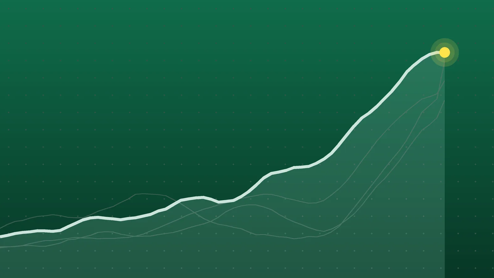

SportsExplainer
Sports Scores, Oct. 24: Brewers Rally for 2-0 World Series Lead
Milwaukee came back from 4-0 down for its seventh straight postseason win, Tilak Varma steered India home with a ball to spare, and Medvedev and Rybakina moved one win from title defenses.

Quick take
- Milwaukee beat Tampa Bay 5-4 after trailing 4-0 in the first inning and leads the World Series 2-0; Game 3 is Monday, Oct. 26, at Tropicana Field.
- India beat New Zealand by four wickets in the second T20I at Hagley Oval, reaching 181-6 in 19.5 overs, to lead the five-match series 2-0.
- Daniil Medvedev reached the Almaty final when Alexander Bublik retired after one set, and Elena Rybakina beat Diana Shnaider 6-3, 7-5 in Ningbo.
- Jan-Lennard Struff knocked out top seed Arthur Fils in Brussels, and Ashlyn Krueger beat top seed Ann Li in Osaka.
Why it's trending Saturday, Oct. 24, brought World Series Game 2, a men’s T20 international in New Zealand, one Ligue 1 match and semifinals at five ATP and WTA tour events.
Sports scores for Oct. 24
Milwaukee is two wins from its first championship. The Brewers spotted Tampa Bay four runs in the first inning, chipped away, and beat the Rays 5-4 at American Family Field in Game 2 of the World Series for a 2-0 series lead. Sal Frelick tied it with a sixth-inning homer and Cooper Pratt singled home the go-ahead run in the seventh, according to AP. For the matchup’s background, see our World Series preview.
In New Zealand, India chased down 181 with one ball left to beat the hosts by four wickets in Christchurch. Five tennis events played their semifinals, and the top seeds in Almaty and Ningbo, Daniil Medvedev and Elena Rybakina, are each one win from defending a title.
This post collects Saturday’s results from sports without a roundup of their own. European soccer is in separate posts: Premier League, La Liga, Serie A and Bundesliga; Ligue 1 played just one Saturday match, listed below. See also our NBA, NHL and college football scores for Oct. 24. The NFL had no Saturday games, and Formula 1 held qualifying in Austin, not a race.
MLB
| League | Winner | Score | Loser | Note |
|---|---|---|---|---|
| MLB | Milwaukee Brewers | 5-4 | Tampa Bay Rays | World Series Game 2; Brewers lead 2-0. W: Abner Uribe; L: Tyler Wells |
Cricket
| Match | Result | Scores | Note |
|---|---|---|---|
| New Zealand vs. India, 2nd T20I, Christchurch | India won by 4 wickets | New Zealand 180-5 (20 overs); India 181-6 (19.5 overs) | Tilak Varma 51 not out, player of the match; Mitchell Santner 4-21 |
That was the only men’s international between full-member nations on Saturday, per the 2026-27 international calendar.
Ligue 1
| League | Home | Score | Away | Goals |
|---|---|---|---|---|
| Ligue 1 | Lens | 2-1 | Paris FC | Luca Koleosho (PFC); Florian Thauvin, Thorgan Hazard (LEN) |
Paris FC went into halftime ahead after Koleosho scored in first-half stoppage time. Thauvin leveled in the 63rd minute and Hazard put Lens in front in the 83rd, with each man assisting the other’s goal, per the t-online live ticker. Maxifoot lists it as the only Saturday game of Matchday 8; six more are Sunday, and Paris Saint-Germain vs. Lyon is Monday.
Tennis semifinals
ATP 250s: Almaty, Lyon and Brussels
| Event | Winner | Score | Loser |
|---|---|---|---|
| Almaty | Daniil Medvedev (1) | 6-3, retired | Alexander Bublik (3) |
| Almaty | Nikoloz Basilashvili (Q) | 6-4, 6-7 (5), 6-3 | Stefanos Tsitsipas |
| Lyon | Taylor Fritz | 6-3, 7-5 | Tommy Paul |
| Lyon | Lorenzo Musetti | 4-6, 6-2, 7-5 | Flavio Cobolli |
| Brussels | Jan-Lennard Struff | 6-4, 6-7 (7), 7-6 (5) | Arthur Fils (1) |
| Brussels | Tallon Griekspoor | 2-6, 6-3, 7-6 (4) | Francisco Cerundolo (3) |
WTA: Ningbo (500) and Osaka (250)
| Event | Winner | Score | Loser |
|---|---|---|---|
| Ningbo | Elena Rybakina (1) | 6-3, 7-5 | Diana Shnaider (6) |
| Ningbo | Leylah Fernandez | 6-3, 7-5 | Marie Bouzkova |
| Osaka | Ashlyn Krueger | 6-4, 6-7 (4), 6-3 | Ann Li (1) |
| Osaka | Katerina Siniakova | 6-1, 6-4 | Katie Boulter |
Seeds are in parentheses where our sources gave them; Q marks a qualifier. These were the five tour-level events playing semifinals Saturday, per Tennis Connected. Each score was matched by two outlets, including Tennis Majors, TennisTemple, Tennis Now, The Hans India, ATP Tour, Al Jazeera and Sky Sports.
Brewers 5, Rays 4: another comeback
Tampa Bay’s four-run first began with a Pratt error on a Yandy Diaz grounder, then Chandler Simpson and Junior Caminero drove in runs, and Liam Hicks hit a two-run homer off rookie Logan Henderson. Milwaukee answered right away with run-scoring singles from William Contreras and Garrett Mitchell, per Yahoo Sports, which said the six combined runs were the most in a Series first inning since 1993.
The Rays then gave ground. In the fourth, David Hamilton’s grounder rolled under first baseman Jonathan Aranda for an error that made it 4-3, and Drew Rasmussen left after 3 2/3 innings, his shortest start since July 9. Frelick’s solo shot off Ian Seymour evened it, and Pratt’s single in the seventh brought in Brice Turang. Abner Uribe threw 1 1/3 hitless innings for the win, and Aaron Ashby retired the side in the ninth. Jackson Chourio also threw out Hicks at the plate.
India’s last-over chase in Christchurch
New Zealand batted first after India won the toss, and Glenn Phillips (70 off 43 balls) and Bevon Jacobs (58) carried the hosts to 180-5. Arshdeep Singh took two wickets. Mitchell Santner then kept the game tight with four wickets for 21 runs, removing Shreyas Iyer, Axar Patel, Abhishek Sharma and Naman Dhir. Dhir’s 31 off 17 kept India close, and Tilak Varma finished unbeaten on 51 from 26 balls, per Outlook India. India needed 11 from Jacob Duffy’s final over; Nitish Kumar Reddy hit a four and scrambled the winning runs with a ball left, CricketNews.com reported.
Tennis: two top seeds out, two still standing
Struff, 34, was facing defeat when Fils served for the match at 5-4 in the third set; he broke back and won the tiebreak to become the first German man to reach the Brussels final, the ATP Tour said. Griekspoor also came from 3-5 down in the decider. In Lyon, Musetti saved four match points while serving at 4-5 in the third against Cobolli. In Osaka, Krueger outlasted top seed Ann Li in three sets. Bublik stopped after one set with a right knee problem, per Tennis Majors.
What it means
- World Series: AP counts 57 earlier teams that led a World Series 2-0, and 46 of them won it, roughly 81%. Milwaukee has won seven straight and, per AP, has erased a four-run deficit twice this postseason. Tampa Bay now must win four of the next five games.
- Cricket: India lead the five-match series 2-0 with three games left, so one more win clinches the series.
- Tennis: Medvedev has won 24 titles but never successfully defended one, according to Tennis Majors. Rybakina improved to 3-0 against Shnaider, all this year. Basilashvili, ranked No. 128, is in his first final since Doha in 2022, and Krueger, the 2023 Osaka champion, is 10-2 lifetime at the event, per Tennis Now. Fils, despite the loss, is seventh in the race for the ATP Finals in Turin.
What’s next
- World Series Game 3, Monday, Oct. 26: at Tropicana Field, 8 p.m. ET, per MLB.com. AP lists Freddy Peralta for Tampa Bay against Milwaukee left-hander Robert Gasser.
- Tennis finals, Sunday, Oct. 25: Medvedev vs. Basilashvili in Almaty, Fritz vs. Musetti in Lyon, Struff vs. Griekspoor in Brussels, Rybakina vs. Fernandez in Ningbo and Krueger vs. Siniakova in Osaka.
- Cricket: the third T20I between New Zealand and India is Tuesday, Oct. 27, in Wellington.
- Formula 1: the U.S. Grand Prix in Austin is Sunday, Oct. 25, at 8 p.m. U.K. time, per Motor Sport Magazine, which is 4 p.m. ET.
Sources
- Associated Press via ABC News Brewers come from behind to beat Rays 5-4 and take 2-0 World Series leadOct. 25, 2026
- Yahoo Sports World Series 2026: Rays build early lead and then unravel as miscues open the door for the latest Brewers comeback in Game 2Oct. 25, 2026
- MLB.com Rays blow 4-0 lead, lose Game 2 of 2026 World SeriesOct. 25, 2026
- TMJ4 Frelick and Pratt lift Brewers to 5-4 comeback win over Rays and 2-0 World Series leadOct. 25, 2026
- Outlook India India Vs New Zealand Highlights, 2nd T20I: Tilak Varma, Nitish Reddy Pull Off Heist To Seal Thrilling Win By 4 WicketsOct. 24, 2026
- CricketNews.com IND vs NZ 2nd T20I 2026 result, highlights and scorecard as Tilak Varma inspires India to a thrilling winOct. 24, 2026
- Wikipedia International cricket in 2026-27Oct. 25, 2026
- t-online Lens - Paris (French Ligue 1) im LivetickerOct. 24, 2026
- Maxifoot Calendrier Ligue 1Oct. 24, 2026
- VAVEL Ligue 1 results, Season 2026-2027Oct. 24, 2026
- Tennis Majors Medvedev one win from the first title defense of his career after Bublik retires in AlmatyOct. 24, 2026
- Tennis Majors Qualifier Basilashvili turns back the clock to stun Tsitsipas and reach Almaty finalOct. 24, 2026
- TennisTemple Medvedev and Basilashvili reach the Almaty 2026 final after contrasting hard-court semifinalsOct. 24, 2026
- Tennis Now Fritz Beats Paul for 24th Final in Lyon, Will Face Musetti in the FinalOct. 24, 2026
- The Hans India Musetti fights back to shock Cobolli, sets up Fritz final in LyonOct. 25, 2026
- ATP Tour Jan-Lennard Struff shocks Arthur Fils in Brussels, sets Tallon Griekspoor final clashOct. 24, 2026
- TennisTemple Struff and Griekspoor complete Brussels 2026 final lineup with hard-court semifinal winsOct. 24, 2026
- Al Jazeera Rybakina readies for title defence at Ningbo Open in final with FernandezOct. 24, 2026
- Tennis Majors Rybakina sets up Ningbo title defense against FernandezOct. 24, 2026
- Sky Sports Katie Boulter loses to Katerina Siniakova in straight sets in semi-finals of Japan OpenOct. 24, 2026
- Tennis Now Krueger Tops Li, Returns to Osaka FinalOct. 24, 2026
- Tennis Connected ATP & WTA Tennis Schedule of Play 2026: Saturday October 24 for Almaty, Lyon, Brussels, Ningbo & OsakaOct. 24, 2026
- Motor Sport Magazine 2026 United States GP start time: how to watch, live stream and F1 scheduleOct. 24, 2026
Keep reading

Sports Scores, Oct. 23: Brewers Win World Series Game 1, 3-2
Sports scores for Oct. 23, 2026: Brewers 3, Rays 2 in World Series Game 1, plus two NHL games, five European soccer leagues, cricket and 20 tennis results.
Sports Scores, Oct. 25: Antonelli Wins U.S. GP, Inter Go Top
Sports scores for Oct. 25, 2026: Antonelli wins the U.S. Grand Prix, Shadab Khan’s 113 beats England, plus Serie A, Bundesliga, Ligue 1 and five tennis finals.

Sports Scores, Oct. 22: Other Results From NBA, NFL and Tennis
Other sports results for Oct. 22, 2026: the NBA’s two games, Bears 30, Patriots 24 on Thursday Night Football, and 20 WTA and ATP singles results.